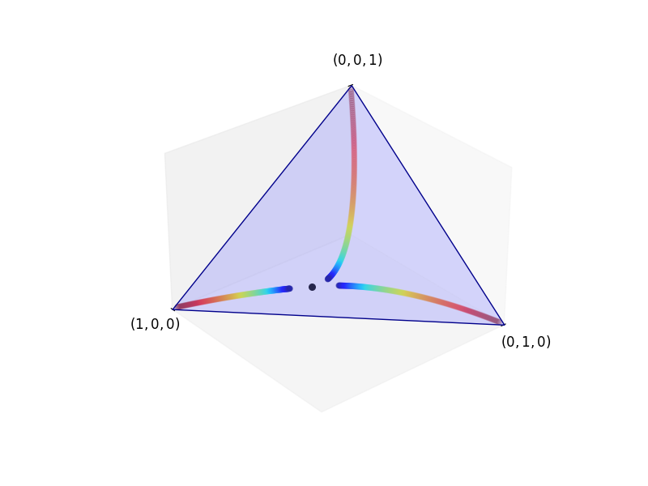

Stasioneritas dan Ergodisitas
Atribusi sumber. Unit ini mengadaptasi Continuous Time Markov Chains karya Thomas J. Sargent dan John Stachurski, tepat pada komit
8b06e0aa5a438692445b2c896f9d238c5a7d5eb7, berkaslectures/ergodicity.md. Sumber dan adaptasi ini tunduk pada CC BY-SA 4.0; seluruh atribusi dan hak penulis sumber dipertahankan. Edisi independen ini tidak menyiratkan dukungan penulis maupun QuantEcon.
Selain yang tersedia di lingkungan ilmiah Python, kuliah ini memerlukan QuantEcon, NumPy, Matplotlib, dan SciPy.
# Dependensi unit disediakan oleh lingkungan luring yang dikunci.
# Tidak ada instalasi paket pada saat pembaca dijalankan.Catatan adaptasi hilir. Sumber menjalankan
!pip install quantecondi dalam pembaca. Instalasi saat eksekusi dihapus agar edisi ini dapat diputar ulang secara luring dan deterministik. Sel kode serta posisinya dipertahankan sebagai jejak asal-usul.
Gambaran Umum
Dalam kuliah ini kita membahas kestabilan dan perilaku kesetimbangan rantai Markov waktu kontinu.
Sebagai salah satu gambaran tentang pentingnya teori ini, tinjau sistem antrean, yang sering dimodelkan sebagai rantai Markov waktu kontinu.
Teori antrean digunakan dalam penerapan seperti
- penanganan pasien yang tiba di rumah sakit;
- perancangan optimal proses manufaktur;
- permintaan kepada peladen berkas;
- lalu lintas udara; dan
- pelanggan yang menunggu layanan bantuan melalui telepon.
Salah satu topik utama dalam teori antrean adalah perilaku rata-rata dalam jangka panjang.
- Apakah panjang antrean akan tumbuh tanpa batas?
- Jika tidak, adakah suatu bentuk kesetimbangan jangka panjang?
- Jika ada, berapakah waktu tunggu rata-rata dalam kesetimbangan itu?
- Berapakah panjang rata-rata antrean selama satu minggu atau satu bulan?
Kita akan menggunakan impor berikut.
import numpy as np
import matplotlib.pyplot as plt
import quantecon as qe
from scipy.linalg import expm
from matplotlib import cm
from mpl_toolkits.mplot3d.art3d import Poly3DCollectionCatatan adaptasi hilir. Impor
scipy as sp,numba.njit, danAxes3Dpada sumber tidak digunakan oleh sel-sel unit ini dan dihapus. Semua impor yang benar-benar diperlukan untuk pemutaran ulang tetap ada.
Distribusi Stasioner
Definisi
Misalkan \(S\) terhitung.
Ingat bahwa, untuk rantai Markov waktu diskret dengan matriks Markov \(P\) pada \(S\), suatu distribusi \(\psi\) disebut stasioner bagi \(P\) jika \(\psi P=\psi.\)
Artinya, jika \(X_t\) berdistribusi \(\psi\), maka \(X_{t+1}\) juga berdistribusi \(\psi\).
Untuk rantai Markov waktu kontinu, definisinya serupa.
Diberikan semigrup Markov \((P_t)\) pada \(S\), distribusi \(\psi^*\in\dD\) disebut stasioner bagi \((P_t)\) jika
\[ \psi^* P_t = \psi^* \text{ untuk setiap } t \geq 0. \]
Sebagai contoh, kita meninjau kembali rantai pada \(S=\{0,1,2\}\) dengan matriks intensitas
Q = ((-3, 2, 1),
(3, -5, 2),
(4, 6, -10))Gambar berikut pernah ditampilkan sebelumnya, tetapi kini sebuah titik hitam menandai distribusi yang tampaknya didekati ketiga lintasan.
(Dalam skema warnanya, lintasan berubah dari warna panas ke warna sejuk seiring berjalannya waktu.)
Tampilkan kode sel tersembunyi 1
def unit_simplex(angle):
fig = plt.figure(figsize=(8, 6))
ax = fig.add_subplot(111, projection='3d')
vtx = [[0, 0, 1],
[0, 1, 0],
[1, 0, 0]]
tri = Poly3DCollection([vtx], color='darkblue', alpha=0.3)
tri.set_facecolor([0.5, 0.5, 1])
ax.add_collection3d(tri)
ax.set(xlim=(0, 1), ylim=(0, 1), zlim=(0, 1),
xticks=(1,), yticks=(1,), zticks=(1,))
ax.set_xticklabels(['$(1, 0, 0)$'], fontsize=12)
ax.set_yticklabels(['$(0, 1, 0)$'], fontsize=12)
ax.set_zticklabels(['$(0, 0, 1)$'], fontsize=12)
ax.xaxis.majorTicks[0].set_pad(15)
ax.yaxis.majorTicks[0].set_pad(15)
ax.zaxis.majorTicks[0].set_pad(35)
ax.view_init(30, angle)
# Pindahkan sumbu ke titik asal.
ax.xaxis._axinfo['juggled'] = (0, 0, 0)
ax.yaxis._axinfo['juggled'] = (1, 1, 1)
ax.zaxis._axinfo['juggled'] = (2, 2, 0)
ax.grid(False)
return ax
Q = np.array(Q)
ψ_00 = np.array((0.01, 0.01, 0.98))
ψ_01 = np.array((0.01, 0.98, 0.01))
ψ_02 = np.array((0.98, 0.01, 0.01))
ax = unit_simplex(angle=50)
def flow_plot(ψ, h=0.001, n=300, angle=50):
colors = cm.jet_r(np.linspace(0.0, 1, n))
x_vals, y_vals, z_vals = [], [], []
for t in range(n):
x_vals.append(ψ[0])
y_vals.append(ψ[1])
z_vals.append(ψ[2])
ψ = ψ @ expm(h * Q)
ax.scatter(x_vals, y_vals, z_vals, c=colors, s=20, alpha=0.2, depthshade=False)
flow_plot(ψ_00)
flow_plot(ψ_01)
flow_plot(ψ_02)
# Tambahkan distribusi stasioner.
P_1 = expm(Q)
mc = qe.MarkovChain(P_1)
ψ = mc.stationary_distributions[0]
ax.scatter(ψ[0], ψ[1], ψ[2], c='k', s=30, depthshade=False)
plt.show()
Alternatif aksesibel untuk gambar. Simpleks probabilitas tiga keadaan memiliki titik sudut \((1,0,0)\), \((0,1,0)\), dan \((0,0,1)\). Tiga lintasan dimulai dekat masing-masing titik sudut, lalu bergerak menuju titik hitam yang sama. Titik itu adalah \(\psi^*\approx(0{,}520548,0{,}356164,0{,}123288)\). Urutan warna panas ke warna sejuk menyatakan arah waktu; informasi matematis utamanya adalah bahwa ketiga kondisi awal mendekati distribusi yang sama.
Catatan koreksi hilir. Ketiga vektor awal pada sumber memakai
0.99bersama dua koordinat0.01, sehingga jumlah massanya1.01dan lintasan tidak berada pada simpleks probabilitas. Koordinat besar diperbaiki menjadi0.98; setiap vektor awal kini berjumlah satu, dan evolusi Markovnya dapat mendekati distribusi stasioner yang ditandai.
Titik hitam tersebut adalah distribusi stasioner \(\psi^*\) dari semigrup Markov \((P_t)\) yang dibangkitkan oleh \(Q\).
Distribusi itu dihitung dengan atribut
stationary_distributions dari kelas
MarkovChain QuantEcon, dengan memilih sembarang \(t>0\)—misalnya \(t=1\)—lalu menyelesaikan \(\psi P_1=\psi\).
Di bawah ini kita menunjukkan bahwa, untuk pilihan \(Q\) tersebut, distribusi stasioner \(\psi^*\) tunggal dalam \(\dD\) karena rantainya tak tereduksi.
Lebih lanjut, seperti disarankan oleh gambar, \(\psi P_t\to\psi^*\) ketika \(t\to\infty\) bagi setiap \(\psi\in\dD\).
Stasioneritas melalui Generator
Dalam banyak kasus, distribusi stasioner lebih mudah dikenali melalui generator semigrup daripada melalui semigrup itu sendiri.
Ini serupa dengan gagasan bahwa suatu titik \(\bar x\) dalam \(\RR^d\) bersifat stasioner bagi ODE vektor \(x'_t=F(x_t)\) ketika \(F(\bar x)=0\).
(Di sini \(F\) merupakan deskripsi infinitesimal dan karena itu analog dengan generator.)
Hasil berikut tetap benar di bawah syarat yang lebih lemah, tetapi versi yang dinyatakan di sini mudah dibuktikan dan mencukupi untuk penerapan kita.
Misalkan \((P_t)\) suatu semigrup Markov UC dengan generator \(Q\). Suatu distribusi \(\psi\) pada \(S\) stasioner bagi \((P_t)\) jika dan hanya jika \(\psi Q=0\).
Tetapkan \(\psi\in\dD\) dan mula-mula andaikan \(\psi Q=0\).
Karena \((P_t)\) merupakan semigrup Markov UC, berlaku \(P_t=e^{tQ}\) bagi setiap \(t\), sehingga untuk setiap \(t\geq0\),
\[ \psi e^{tQ} = \psi + t\psi Q + t^2\frac{\psi Q^2}{2!}+\cdots. \]
Dari \(\psi Q=0\) diperoleh \(\psi Q^k=0\) bagi setiap \(k\in\NN\), sehingga tampilan terakhir memberi \(\psi P_t=\psi\). Jadi, \(\psi\) stasioner bagi \((P_t)\).
Sekarang andaikan \(\psi\) stasioner bagi \((P_t)\) dan tetapkan \(D_t:=(P_t-I)/t\). Berdasarkan ketaksamaan segitiga dan definisi norma operator, untuk setiap \(t>0\),
\[ \|\psi Q\| \leq \|\psi(Q-D_t)\|+\|\psi D_t\| \leq \|Q-D_t\|+\|\psi D_t\|. \]
Karena \((P_t)\) bersifat UC dan \(Q\) adalah generatornya, \(\|D_t-Q\|\to0\) dalam \(\lL(\ell_1)\) ketika \(t\downarrow0\). Maka
\[ \|\psi Q\| \leq \liminf_{t\downarrow0}\|\psi D_t\|. \]
Stasioneritas memberi \(\psi D_t=0\) bagi setiap \(t>0\). Jadi, \(\psi Q=0\), seperti yang hendak dibuktikan.
Ketaktereduksian dan Ketunggalan
Misalkan \((P_t)\) suatu semigrup Markov pada \(S\), dan tinjau sembarang keadaan \(x,y\in S\).
Kita mengatakan bahwa keadaan \(y\) dapat dicapai dari keadaan \(x\) jika terdapat \(t\geq0\) sedemikian sehingga \(P_t(x,y)>0\).
Kita mengatakan bahwa \(x\) dan \(y\) berkomunikasi jika \(x\) dapat dicapai dari \(y\) dan \(y\) dapat dicapai dari \(x\).
Semigrup Markov \((P_t)\) pada \(S\) disebut tak tereduksi jika setiap pasangan \(x,y\) dalam \(S\) berkomunikasi.
Kita mencari karakterisasi ketaktereduksian \((P_t)\) melalui generatornya.
Sebagai langkah awal, kita mengatakan bahwa terdapat aliran probabilitas positif-\(Q\) dari \(x\) ke \(y\) jika ada barisan berhingga \((z_i)_{i=0}^m\) dalam \(S\) yang dimulai di \(x=z_0\), berakhir di \(y=z_m\), dan memenuhi \(Q(z_i,z_{i+1})>0\) bagi setiap \(i\).
Misalkan \((P_t)\) suatu semigrup Markov UC dengan generator \(Q\). Untuk keadaan berbeda \(x\) dan \(y\), ketiga pernyataan berikut ekuivalen:
- Keadaan \(y\) dapat dicapai dari \(x\) di bawah \((P_t)\).
- Terdapat aliran probabilitas positif-\(Q\) dari \(x\) ke \(y\).
- \(P_t(x,y)>0\) bagi setiap \(t>0\).
Pilih dua keadaan berbeda \(x\) dan \(y\).
Kita terlebih dahulu mempertahankan dua identitas aljabar beserta label stabilnya dari sumber. Karena \(x\neq y\), ekspansi eksponensial memberi
\[ P_t(x,y)=tQ(x,y)+\frac{t^2}{2!}Q^2(x,y)+\cdots. \]
Selain itu, untuk setiap \(k\geq1\),
\[ Q^k(x,y) =\sum_{z_1}\sum_{z_2}\cdots\sum_{z_{k-1}} Q(x,z_1)Q(z_1,z_2)\cdots Q(z_{k-1},y). \]
Kedua identitas itu benar, tetapi sumber melanjutkan dari \(P_t(x,y)>0\) ke klaim bahwa setidaknya
satu \(Q^k(x,y)>0\), lalu
menambahkan >0 pada persamaan qkassum. Implikasi tersebut tidak
sah: entri diagonal \(Q\) negatif,
sehingga suku-suku bertanda dapat saling meniadakan. Karena itu,
identitas sumber dipertahankan di atas, sedangkan pembuktian
implikasinya diperbaiki sebagai berikut.
Karena \(Q\) konservatif, tetapkan \(m:=\sup_u[-Q(u,u)]<\infty\). Jika \(m=0\), maka \(Q=0\) dan ketiga pernyataan sama-sama salah untuk \(x\neq y\). Selanjutnya andaikan \(m>0\) dan definisikan
\[ R:=I+Q/m. \]
Matriks \(R\) adalah matriks Markov dan rumus uniformisasi memberi
\[ P_t=e^{tQ} =e^{-mt}\sum_{k=0}^{\infty}\frac{(mt)^k}{k!}R^k. \]
Semua suku matriks pada jumlah tersebut tak negatif. Karena itu, untuk suatu \(t>0\), \(P_t(x,y)>0\) jika dan hanya jika \(R^k(x,y)>0\) bagi setidaknya satu \(k\in\NN\).
Untuk \(k\geq1\), perkalian matriks memberikan
\[ R^k(x,y) =\sum_{z_1}\sum_{z_2}\cdots\sum_{z_{k-1}} R(x,z_1)R(z_1,z_2)\cdots R(z_{k-1},y). \]
Jika jumlah ini positif, setidaknya satu hasil kali positif. Hapus setiap langkah-diri dari lintasan yang bersesuaian. Karena titik awal dan akhirnya berbeda, tersisa sebuah lintasan tak kosong, dan untuk setiap langkah berbeda \(u\neq v\) di dalamnya,
\[ R(u,v)=Q(u,v)/m>0. \]
Jadi, pernyataan 1 menyiratkan pernyataan 2.
Sebaliknya, jika terdapat aliran positif-\(Q\) \(x=z_0,z_1,\ldots,z_r=y\), maka \(R(z_i,z_{i+1})>0\) bagi setiap \(i\). Dengan demikian \(R^r(x,y)>0\), dan suku ke-\(r\) dalam persamaan unifexp memberi
\[ P_t(x,y) \geq e^{-mt}\frac{(mt)^r}{r!}R^r(x,y)>0 \qquad (t>0). \]
Ini membuktikan bahwa pernyataan 2 menyiratkan pernyataan 3. Implikasi 3 ke 1 langsung dari definisi.
Untuk mempertahankan seluruh cakupan formula sumber, kita juga mencatat jalur rantai-lompatan yang sah bagi implikasi 2 ke 3. Jika \(Q(u,v)>0\), pasangan rantai lompatan \((\lambda,K)\) dari persamaan lambdafromq, persamaan kfromqxx, dan persamaan kfromqxy memenuhi \(\lambda(u)>0\) dan
\[ K(u,v)=\frac{Q(u,v)}{\lambda(u)}>0. \]
Misalkan \((Y_k)\) dan \((J_k)\) adalah rantai lompatan tertanam dan barisan waktu lompatan yang dihasilkan oleh algoritma rantai lompatan, dengan \(Y_0=u\). Untuk \(E_1,E_2\sim\Exp(1)\), bagi setiap \(t>0\) berlaku
\[ \begin{aligned} P_t(u,v) &\geq \PP\{J_1\leq t,\,Y_1=v,\,J_2>t\} \\ &\geq \PP\{E_1\leq t\lambda(u),\,E_2>t\lambda(v)\}\PP\{Y_1=v\} \\ &=\PP\{E_1\leq t\lambda(u)\} \PP\{E_2>t\lambda(v)\}K(u,v)>0. \end{aligned} \]
Jika \((z_i)_{i=0}^r\) suatu aliran positif-\(Q\) dari \(x\) ke \(y\), penerapan berulang Chapman–Kolmogorov persamaan chapkol_ct2 kemudian memberi
\[ P_t(x,y) \geq\prod_{i=0}^{r-1}P_{t/r}(z_i,z_{i+1})>0. \]
Catatan koreksi hilir. Sumber menyimpulkan keberadaan lintasan positif dari suatu entri positif \(Q^k(x,y)\). Argumen itu tidak sah karena entri diagonal \(Q\) negatif, sehingga suku-suku dalam ekspansi \(Q^k\) dapat saling meniadakan; sumber juga membalik \(x\) dan \(y\) dalam premis ketercapaian. Uniformisasi di atas mengganti \(Q\) dengan matriks Markov tak negatif \(R\), menangani kasus \(m=0\), dan membuktikan ketiga implikasi tanpa pembagian oleh laju keadaan tujuan yang mungkin nol. Identitas Taylor dan perkalian matriks sumber tetap berada pada persamaan ptexpan dan persamaan qkassum; formula uniformisasi yang baru memakai label terpisah persamaan unifexp dan persamaan rkassum, sehingga makna label sumber tidak berubah.
teorema ekuivalensi ketercapaian langsung menghasilkan akibat kuat berikut.
Untuk semigrup Markov UC \((P_t)\), kedua pernyataan berikut ekuivalen:
- \((P_t)\) tak tereduksi.
- \(P_t(x,y)>0\) bagi setiap \(t>0\) dan setiap \((x,y)\in S\times S\).
Catatan pelengkapan hilir. Untuk pasangan diagonal, kepositifan mengikuti langsung dari suku \(k=0\) dalam persamaan unifexp, yang memberi \(P_t(x,x)\geq e^{-mt}>0\) ketika \(m>0\); jika \(m=0\), maka \(P_t=I\). Untuk pasangan berbeda, ekuivalensinya adalah teorema ekuivalensi ketercapaian.
Untuk memperoleh perilaku jangka panjang yang stabil pada rantai Markov waktu diskret, lazim diasumsikan bahwa rantainya aperiodik.
Asumsi ini dibutuhkan di samping ketaktereduksian jika kita ingin menyingkirkan seluruh kebergantungan pada kondisi awal.
akibat kepositifan waktu kontinu menunjukkan bahwa periodisitas tidak menjadi masalah bagi rantai Markov waktu kontinu yang tak tereduksi.
Aliran probabilitas positif dari \(x\) ke \(y\) pada suatu \(t>0\) langsung menyiratkan aliran positif pada setiap \(t>0\).
Kestabilan Asimtotik
Kita menyebut semigrup Markov \((P_t)\) stabil asimtotik jika \((P_t)\) memiliki distribusi stasioner tunggal \(\psi^*\) dalam \(\dD\) dan
\[ \|\psi P_t-\psi^*\|\to0 \text{ ketika }t\to\infty \text{ bagi setiap }\psi\in\dD. \]
Tujuan kita adalah menetapkan syarat-syarat kestabilan asimtotik semigrup Markov.
Kontraktivitas
Mari kita ingat beberapa fakta berguna dari kasus waktu diskret.
Pertama, jika \(P\) sembarang matriks Markov, maka dalam norma \(\ell_1\),
\[ \|fP\|\leq\|f\| \text{ bagi setiap } f\in\ell_1. \]
Memang, bagi \(f\in\ell_1\),
\[ \|fP\| =\sum_y\left|\sum_x f(x)P(x,y)\right| \leq\sum_y\sum_x|f(x)|P(x,y) =\|f\|. \]
Dengan menerapkan hasil ini kepada \(f=\psi-\phi\), untuk \(\psi,\phi\in\dD\) kita memperoleh
\[ \|\psi P-\phi P\|\leq\|\psi-\phi\|. \]
Jadi, setiap operator Markov bersifat mengontraksikan pada \(\dD\).
Catatan koreksi hilir. Sumber menyatakan dan membuktikan persamaan allmocontract hanya untuk \(\psi\in\dD\), lalu mengatakan bahwa hasil untuk selisih mengikuti dari linearitas. Bukti yang diperlukan sebenarnya berlaku untuk setiap \(f\in\ell_1\), sebagaimana dinyatakan di atas; barulah ia dapat diterapkan kepada selisih bertanda \(\psi-\phi\).
Lebih lanjut, jika \(P\) positif di setiap entri, ketaksamaan tersebut bersifat ketat.
Kontraktivitas Ketat Jika \(P\) suatu matriks Markov dan \(P(x,y)>0\) bagi setiap \(x,y\), maka
\[ \|\psi P-\phi P\|<\|\psi-\phi\| \]
bagi setiap \(\psi,\phi\in\dD\) dengan \(\psi\neq\phi\).
Catatan pelengkapan hilir. Untuk melihat ketatnya ketaksamaan, tulis \(h:=\psi-\phi=h^+-h^-\) dan \(a:=\|h\|/2>0\). Karena jumlah koordinat \(h\) nol, \(h^+/a\) dan \(h^-/a\) adalah dua distribusi. Kepositifan semua entri \(P\) membuat kedua citra distribusi itu bernilai positif pada setiap koordinat, sehingga keduanya memiliki tumpang tindih positif. Oleh karena itu, variasi total—dan dengan demikian norma \(\ell_1\) dari selisih—berkurang secara ketat setelah dikalikan dengan \(P\).
Lihat, misalnya, Proposisi 3.1.2 dalam Andrzej Lasota dan Michael C. Mackey, Chaos, Fractals, and Noise: Stochastic Aspects of Dynamics (Springer, 1994), Proposition 3.1.2 atau Lema 8.2.3 dalam John Stachurski, Economic Dynamics: Theory and Computation (MIT Press, 2009), Lemma 8.2.3.
Ketunggalan
Ketaktereduksian rantai Markov memastikan tidak adanya himpunan penyerap yang saling lepas.
Hal ini pada gilirannya menghasilkan ketunggalan distribusi stasioner.
Misalkan \((P_t)\) suatu semigrup Markov UC pada \(S\). Jika \((P_t)\) tak tereduksi, maka \((P_t)\) memiliki paling banyak satu distribusi stasioner.
Andaikan sebaliknya bahwa \(\psi\) dan \(\phi\) keduanya stasioner bagi \((P_t)\).
Karena \((P_t)\) tak tereduksi, kita mengetahui bahwa \(P_1(x,y)>0\) bagi setiap \(x,y\in S\).
Jika \(\psi\neq\phi\), kepositifan \(P_1\) membuat ketaksamaan dalam lema kontraktivitas ketat bersifat ketat. Namun, berdasarkan stasioneritas,
\[ \|\psi P_1-\phi P_1\|=\|\psi-\phi\|, \]
sebuah kontradiksi.
Catatan koreksi hilir. Sumber menulis \(P\) tanpa definisi pada persamaan terakhir. Notasi diperbaiki menjadi \(P_1\), yaitu operator positif yang digunakan pada kalimat sebelumnya.
Antrean M/M/1 dengan parameter \(\mu,\lambda\) merupakan rantai Markov waktu kontinu \((X_t)\) pada \(S=\ZZ_+\) dengan matriks intensitas
\[ Q=\begin{pmatrix} -\lambda & \lambda & 0 & 0 & \cdots \\ \mu & -(\mu+\lambda) & \lambda & 0 & \cdots \\ 0 & \mu & -(\mu+\lambda) & \lambda & \cdots \\ \vdots & \vdots & \vdots & \vdots & \ddots \end{pmatrix}. \]
Rantai \((X_t)\) mencatat panjang antrean pada setiap saat.
Matriks intensitas tersebut menangkap gagasan bahwa pelanggan masuk ke antrean dengan laju \(\lambda\) dan dilayani—lalu meninggalkan antrean—dengan laju \(\mu\).
Jika \(\lambda\) dan \(\mu\) keduanya positif, terdapat aliran probabilitas positif-\(Q\) di antara setiap dua keadaan dalam kedua arah. Jadi, semigrup \((P_t)\) yang bersesuaian tak tereduksi.
teorema ketunggalan kini menyatakan bahwa \((P_t)\) memiliki paling banyak satu distribusi stasioner.
Kestabilan melalui Rantai Kerangka
Ingat definisi kestabilan asimtotik dalam persamaan asyms.
Secara analog, kita menyebut sebuah operator Markov \(P\) stabil asimtotik jika \(P\) memiliki distribusi stasioner tunggal \(\psi^*\) dalam \(\dD\) dan \(\psi P^n\to\psi^*\) ketika \(n\to\infty\) bagi setiap \(\psi\in\dD\).
Hasil berikut menghubungkan kestabilan waktu diskret dan waktu kontinu.
Bahan penting yang menghubungkan kedua konsep itu adalah kontraktivitas dalam persamaan allmocontract.
Misalkan \((P_t)\) suatu semigrup Markov. Jika ada \(s>0\) sedemikian sehingga matriks Markov \(P_s\) stabil asimtotik, maka \((P_t)\) stabil asimtotik dengan distribusi stasioner yang sama.
Misalkan \((P_t)\) dan \(s\) seperti dalam pernyataan lema rantai kerangka, dan misalkan \(\psi^*\) distribusi stasioner tunggal \(P_s\).
Pertama, kita membuktikan bahwa \(\psi^*\) stasioner bagi seluruh semigrup. Untuk setiap \(h\geq0\), sifat semigrup dan komutativitas parameter waktu memberi
\[ (\psi^*P_h)P_s =\psi^*P_{h+s} =(\psi^*P_s)P_h =\psi^*P_h. \]
Jadi, \(\psi^*P_h\) merupakan distribusi stasioner bagi \(P_s\). Berdasarkan ketunggalan, \(\psi^*P_h=\psi^*\) bagi setiap \(h\geq0\).
Selain itu, setiap distribusi yang stasioner bagi seluruh \((P_t)\) pasti stasioner bagi \(P_s\); ketunggalan untuk \(P_s\) karena itu juga memberi ketunggalan untuk semigrup penuh.
Sekarang tetapkan \(\psi\in\dD\) dan \(\epsilon>0\). Berdasarkan kestabilan \(P_s\), kita dapat memilih \(n\in\NN\) sehingga \(\|\psi P_s^n-\psi^*\|<\epsilon\).
Ambil sembarang \(t>sn\) dan tetapkan \(h:=t-sn\). Dengan kontraktivitas dalam persamaan allmocontract, identitas \(P_{sn}=P_s^n\), dan stasioneritas yang baru dibuktikan,
\[ \|\psi P_t-\psi^*\| =\|\psi P_{sn}P_h-\psi^*P_h\| \leq\|\psi P_{sn}-\psi^*\| <\epsilon. \]
Jadi, \((P_t)\) stabil asimtotik.
Catatan pelengkapan hilir. Sumber memakai \(\psi^*P_h=\psi^*\) tanpa membuktikannya, padahal pada saat itu hanya stasioneritas terhadap \(P_s\) yang diketahui. Argumen komutasi dan ketunggalan di atas menutup langkah yang hilang.
Kestabilan melalui Hanyutan
Pada bagian ini kita membahas syarat hanyutan, yaitu metode ampuh untuk memperoleh kestabilan asimtotik ketika ruang keadaan dapat tak berhingga.
Gagasannya adalah menunjukkan bahwa keadaan cenderung hanyut kembali menuju suatu himpunan berhingga.
Hanyutan semacam itu mencegah massa menyapu menuju tak berhingga, sedangkan ketaktereduksian menyediakan pencampuran dan ketunggalan yang berhubungan dengan mekanisme dalam lema kontraktivitas ketat. Teorema yang dirujuk di bawah menggabungkan unsur-unsur tersebut untuk menghasilkan kestabilan global.
Teorema berikut memberikan salah satu versi yang berguna.
Misalkan \((P_t)\) suatu semigrup Markov UC dengan matriks intensitas \(Q\). Andaikan \((P_t)\) tak tereduksi dan terdapat fungsi \(v\colon S\to\RR_+\), himpunan berhingga \(F\subset S\), serta konstanta positif \(\epsilon\) dan \(M\) sedemikian sehingga
\[ \sum_y Q(x,y)v(y) \leq \begin{cases} M & \text{jika }x\in F,\\ -\epsilon & \text{jika }x\notin F. \end{cases} \]
Andaikan pula \(\sum_{y\neq x}Q(x,y)v(y)<\infty\) bagi setiap \(x\), sehingga jumlah di ruas kiri terdefinisi dalam arti domain generator yang dipakai oleh teorema hanyutan. Maka \((P_t)\) stabil asimtotik.
Pembuktian teorema kestabilan hanyutan dapat ditemukan dalam Katarzyna Pichór, Ryszard Rudnicki, dan Marta Tyran-Kamińska, Stochastic Semigroups and Their Applications to Biological Models, Demonstratio Mathematica 45(2), 463–494 (2012).
Catatan ruang lingkup hilir. Sumber menyisipkan kata and ke dalam cabang pertama tampilan potongan dan tidak menyatakan syarat keterdefinisian \(Qv\) ketika \(v\) tak terbatas. Tampilan di atas memperbaiki tata letaknya dan menyatakan domain yang diperlukan. Teorema tetap digunakan hanya dalam ruang lingkup hasil yang dirujuk, bukan sebagai klaim bahwa sembarang matriks formal \(Q\) dapat diterapkan pada sembarang \(v\) tak terbatas.
Tinjau kembali antrean M/M/1 pada \(\ZZ_+\) dengan matriks intensitas persamaan mm1q.
Andaikan \(0<\lambda<\mu\).
Secara intuitif, panjang antrean tidak akan cenderung menuju tak berhingga dalam kasus ini karena laju pelayanan lebih tinggi daripada laju kedatangan.
Intuisi itu dapat dipastikan melalui teorema kestabilan hanyutan dengan menetapkan \(v(j)=j\).
Untuk setiap \(i\geq1\),
\[ \sum_{j\geq0}Q(i,j)v(j) =(i-1)\mu-i(\mu+\lambda)+(i+1)\lambda =\lambda-\mu. \]
Tetapkan \(F=\{0\}\) dan \(\epsilon:=\mu-\lambda>0\). Di luar \(F\), hanyutannya adalah \(-\epsilon\). Pada \(i=0\),
\[ \sum_{j\geq0}Q(0,j)v(j)=\lambda, \]
sehingga kita dapat memilih konstanta positif \(M:=\lambda\). Syarat teorema kestabilan hanyutan terpenuhi, dan semigrup yang bersesuaian stabil asimtotik.
Catatan koreksi hilir. Sumber menetapkan \(M=\lambda-\mu=-\epsilon\), padahal teorema mensyaratkan \(M>0\) dan nilai hanyutan pada keadaan \(0\) sebenarnya \(\lambda\). Pilihan \(M=\lambda\) di atas memperbaiki kedua masalah tersebut.
Jika \((P_t)\) suatu semigrup Markov UC yang tak tereduksi dan \(S\) berhingga, maka \((P_t)\) stabil asimtotik.
Latihan berjawaban di bawah meminta Anda memastikan akibat ini.
Latihan
Misalkan \((P_t)\) suatu semigrup Markov. Benar atau salah: bagi semigrup ini, setiap keadaan \(x\) dapat dicapai dari dirinya sendiri.
Solusi Pernyataan tersebut benar. Dengan \(t=0\), kita memiliki \(P_t(x,x)=I(x,x)=1>0\).
Catatan pelengkapan hilir. Jawaban ini memakai definisi ketercapaian dalam unit ini, yang mengizinkan \(t=0\). Jika suatu konvensi lain mensyaratkan waktu positif, kesimpulannya memerlukan argumen tambahan dan tidak mengikuti hanya dari \(P_0=I\).
Misalkan \((\lambda_k)\) suatu barisan terbatas dan tak menaik dalam \((0,\infty)\).
Sebuah proses kelahiran murni yang dimulai dari nol adalah proses Markov waktu kontinu \((X_t)\) pada ruang keadaan \(\ZZ_+\) dengan matriks intensitas
\[ Q=\begin{pmatrix} -\lambda_0 & \lambda_0 & 0 & 0 & \cdots \\ 0 & -\lambda_1 & \lambda_1 & 0 & \cdots \\ 0 & 0 & -\lambda_2 & \lambda_2 & \cdots \\ \vdots & \vdots & \vdots & \vdots & \ddots \end{pmatrix}. \]
Tunjukkan bahwa semigrup Markov \((P_t)\) yang bersesuaian tidak memiliki distribusi stasioner.
Solusi Andaikan sebaliknya bahwa \(\phi\in\dD\) dan \(\phi Q=0\).
Pada koordinat nol,
\[ (\phi Q)(0)=-\lambda_0\phi(0)=0. \]
Karena \(\lambda_0>0\), diperoleh \(\phi(0)=0\).
Untuk setiap \(j\geq1\),
\[ (\phi Q)(j) =-\lambda_j\phi(j)+\lambda_{j-1}\phi(j-1)=0. \]
Induksi pada \(j\) kini memberi \(\phi(j)=0\) bagi setiap \(j\in\ZZ_+\), sebab semua \(\lambda_j\) positif. Ini bertentangan dengan \(\sum_j\phi(j)=1\). Jadi, tidak ada distribusi stasioner.
Catatan koreksi hilir. Solusi sumber membagi dengan \(\phi(j-1)\), yang mungkin nol, lalu menyimpulkan bahwa \(\phi\) tak menurun. Argumen koordinat-nol dan induksi di atas tidak melakukan pembagian yang tidak sah dan bahkan menunjukkan secara langsung bahwa semua koordinat harus nol. Sifat terbatas barisan tetap diperlukan untuk latar UC yang dipakai pada teorema stasioneritas generator.
Pastikan bahwa teorema kestabilan hanyutan menyiratkan akibat ruang keadaan berhingga.
Solusi Misalkan \((P_t)\) suatu semigrup Markov UC yang tak tereduksi dan \(S\) berhingga.
Pilih sembarang konstanta positif \(M,\epsilon\), tetapkan fungsi konstan \(v(x)=M\), dan ambil \(F=S\).
Untuk setiap \(x\in S\),
\[ \sum_yQ(x,y)v(y) =M\sum_yQ(x,y) =0 \leq M. \]
Catatan pelengkapan hilir. Cabang syarat bagi \(x\notin F\) kosong karena \(F=S\). Jadi, syarat hanyutan dalam teorema kestabilan hanyutan terpenuhi dan \((P_t)\) stabil asimtotik.